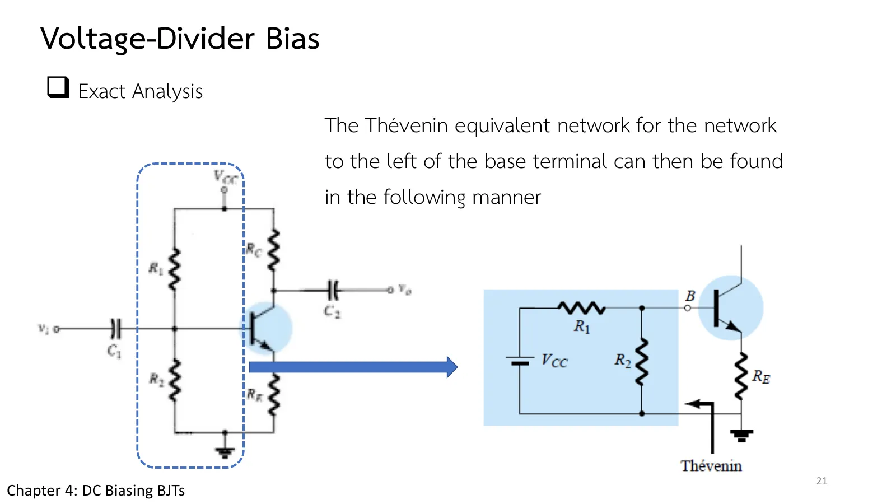
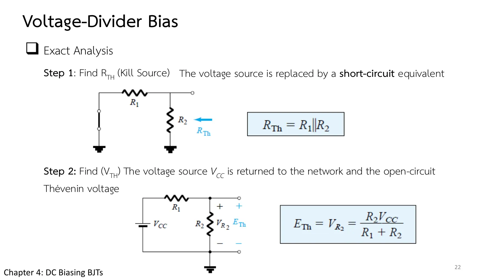

วงจรไบแอสแบบตัวแบ่งแรงดัน Voltage-divider bias
Voltage-divider bias Exact with Thévenin, approximate when \(\beta R_E \ge 10R_2\)
สไลด์บทที่ 4 หน้า 20–25 วงจรไบแอสแบบตัวแบ่งแรงดัน (voltage-divider bias) ตั้งแรงดันเบสด้วย \(R_1\), \(R_2\) ถ้าเลือกค่าดี จุด Q (\(I_{CQ}\), \(V_{CEQ}\)) แทบไม่ขึ้นกับ β เลย มีสองวิธี: แม่นยำ แทนตัวแบ่งด้วยวงจรเทเวนิน (Thévenin) \(R_{Th}\), \(E_{Th}\) แล้วใช้สมการแบบเดียวกับไบแอสอิมิตเตอร์ และ โดยประมาณ ตัดกระแสเบสทิ้งเมื่อ \(\beta R_E \ge 10R_2\) หน้านี้มีภาพจำลองที่ปรับ \(R_1\), \(R_2\), \(R_E\), β ได้พร้อมตัวชี้เงื่อนไข (ส่วน A) Ex.4 วิธีแม่นยำ วิธีโดยประมาณกับผลของ β ที่ลดครึ่ง (Examples 4.9–4.10) กรณีเงื่อนไขไม่ผ่าน (Example 4.11) และแบบฝึกเพิ่ม
Chapter 4 slides pp. 20–25. Voltage-divider bias sets the base voltage with \(R_1\), \(R_2\); with the values well chosen, Q (\(I_{CQ}\), \(V_{CEQ}\)) hardly depends on β. Two methods: the exact one replaces the divider by its Thévenin circuit \(R_{Th}\), \(E_{Th}\) and then uses the emitter-bias equations; the approximate one drops the base current when \(\beta R_E \ge 10R_2\). This page has a circuit whose \(R_1\), \(R_2\), \(R_E\), β you can change with a criterion indicator (section A), Ex.4 exactly, the approximate method and β halved (Examples 4.9–4.10), the case where the criterion fails (Example 4.11), and more practice.
ประเด็นสำคัญของหน้านี้
- ทำไมต้องมี: ในวงจรก่อนหน้า \(I_{CQ}\) และ \(V_{CEQ}\) ยังขึ้นกับ β ซึ่งไม่แน่นอนและเปลี่ยนตามอุณหภูมิ วงจรนี้ให้จุด Q คงที่แม้ β เปลี่ยน โดย \(I_{BQ}\) เป็นตัวที่ปรับตัวเอง (สไลด์หน้า 20)
- วิธีแม่นยำ (สไลด์หน้า 21–23): มองจากเบสไปทางซ้าย ตัวแบ่งแรงดันแทนได้ด้วยเทเวนิน ขั้นที่ 1 \(R_{Th} = R_1 \parallel R_2\) (ลัดวงจร \(V_{CC}\)) ขั้นที่ 2 \(E_{Th}\) = แรงดันคร่อม \(R_2\) ขั้นที่ 3 กฎแรงดันรอบวงให้ \(I_B\) (สมการ 4.30) ขั้นที่ 4 ที่เหลือเหมือนไบแอสอิมิตเตอร์
- วิธีโดยประมาณ: เมื่อ \(R_i = (\beta + 1)R_E \gg R_2\) กระแสเบสน้อยกว่ากระแสในตัวแบ่งมาก ให้ \(V_B\) จากกฎตัวแบ่งแรงดัน แล้ว \(V_E\), \(I_E \cong I_C\), \(V_{CE}\) โดยไม่ใช้ β (สมการ 4.32–4.37) เกณฑ์คือ \(\beta R_E \ge 10R_2\) (สมการ 4.33)
- ความไวต่อ β: β จาก 100 เหลือ 50 เปลี่ยน \(V_{CEQ}\) ไม่ถึง 3 % (วงจรไบแอสคงที่: กว่า 300 %) (Example 4.10)
- อิ่มตัวและเส้นโหลด: เหมือนวงจรไบแอสอิมิตเตอร์ทุกประการ \(I_{C\text{sat}} = V_{CC}/(R_C + R_E)\) (สไลด์หน้า 25)
Key points of this page
- Why: in the earlier circuits \(I_{CQ}\) and \(V_{CEQ}\) still depend on β, which is uncertain and drifts with temperature. This circuit holds Q while β changes; \(I_{BQ}\) is what adjusts itself (slide p. 20).
- The exact method (slides pp. 21–23): looking left from the base, the divider becomes its Thévenin circuit. Step 1, \(R_{Th} = R_1 \parallel R_2\) (\(V_{CC}\) shorted); step 2, \(E_{Th}\) = the voltage across \(R_2\); step 3, the loop law gives \(I_B\) (Eq. 4.30); step 4, the rest is emitter bias.
- The approximate method: when \(R_i = (\beta + 1)R_E \gg R_2\) the base current is much smaller than the divider current; take \(V_B\) from the divider rule, then \(V_E\), \(I_E \cong I_C\), \(V_{CE}\) without β (Eqs. 4.32–4.37). The criterion is \(\beta R_E \ge 10R_2\) (Eq. 4.33).
- Sensitivity to β: β from 100 to 50 changes \(V_{CEQ}\) by under 3 % (fixed bias: over 300 %) (Example 4.10).
- Saturation and the load line: exactly as for emitter bias, \(I_{C\text{sat}} = V_{CC}/(R_C + R_E)\) (slide p. 25).
ตัวแบ่งแรงดัน: วิธีแม่นยำกับวิธีโดยประมาณ
The divider: exact against approximate



เริ่มจากวงจรของ Ex.4 แผงค่าแสดงทั้งสองวิธี: วิธีแม่นยำ (ตัวแก้วงจร) และวิธีโดยประมาณ พร้อมตัวชี้ว่า \(\beta R_E \ge 10R_2\) หรือไม่ ลองเพิ่ม \(R_2\) หรือลด β จนเงื่อนไขไม่ผ่าน แล้วดูผลต่างระหว่างสองวิธีโตขึ้น กราฟล่าง (\(I_C\) เทียบกับ β) ของวงจรนี้แทบราบ
Start from the circuit of Ex.4. The reading list shows both methods, exact (the solver) and approximate, with an indicator of whether \(\beta R_E \ge 10R_2\). Raise \(R_2\) or lower β until the criterion fails and watch the gap between the two methods grow. The lower graph (\(I_C\) against β) of this circuit is almost flat.
Ex.4: วิธีแม่นยำ
Ex.4: the exact method
\(V_{CC}\) = 22 V, \(R_1\) = 39 kΩ, \(R_2\) = 3.9 kΩ, \(R_C\) = 10 kΩ, \(R_E\) = 1.5 kΩ, β = 140 จงหา \(V_{CE}\) และ \(I_C\) ด้วยวิธีแม่นยำ
\(V_{CC}\) = 22 V, \(R_1\) = 39 kΩ, \(R_2\) = 3.9 kΩ, \(R_C\) = 10 kΩ, \(R_E\) = 1.5 kΩ, β = 140. Determine \(V_{CE}\) and \(I_C\) exactly.
แผงข้างภาพแสดงแรงดันของโหนดในสองขั้นแรก (\(V_B\) ต่ำกว่า \(E_{Th}\) เล็กน้อยเพราะ \(I_BR_{Th}\)) แล้วสลับเป็นเส้นโหลด ลองตอบก่อน
The side panel shows the node voltages during the first two steps (\(V_B\) is a little below \(E_{Th}\) because of \(I_BR_{Th}\)), then switches to the load line. Try it first.
วิธีโดยประมาณ และเมื่อ β ลดลงครึ่งหนึ่ง
The approximate method, and β halved
วงจรของ Ex.4 (a) ตรวจเงื่อนไข \(\beta R_E \ge 10R_2\) แล้วหา \(I_{CQ}\), \(V_{CEQ}\) ด้วยวิธีโดยประมาณ เทียบกับวิธีแม่นยำ (b) ถ้า β ลดเหลือ 50 จงหา \(I_{CQ}\), \(V_{CEQ}\) ด้วยวิธีแม่นยำ แล้วเทียบ
The circuit of Ex.4. (a) Check \(\beta R_E \ge 10R_2\), then find \(I_{CQ}\), \(V_{CEQ}\) approximately and compare with the exact values. (b) With β reduced to 50, find \(I_{CQ}\), \(V_{CEQ}\) exactly and compare.
ภาพจำลองเปลี่ยนเป็นทรานซิสเตอร์ β = 50 ในขั้นที่ 3 ลองตอบก่อน
The simulation switches to a β = 50 transistor at step 3. Try it first.
เมื่อเงื่อนไข \(\beta R_E \ge 10R_2\) ไม่ผ่าน
When the criterion \(\beta R_E \ge 10R_2\) fails
\(V_{CC}\) = 18 V, \(R_1\) = 82 kΩ, \(R_2\) = 22 kΩ, \(R_C\) = 5.6 kΩ, \(R_E\) = 1.2 kΩ, β = 50 จงหา \(I_{CQ}\), \(V_{CEQ}\) ทั้งวิธีแม่นยำและโดยประมาณ แล้วเทียบ
\(V_{CC}\) = 18 V, \(R_1\) = 82 kΩ, \(R_2\) = 22 kΩ, \(R_C\) = 5.6 kΩ, \(R_E\) = 1.2 kΩ, β = 50. Determine \(I_{CQ}\), \(V_{CEQ}\) both exactly and approximately, and compare.
ลองตอบก่อน
Try it first.
ฝึกเพิ่ม
More practice
ลองทำดู 1 — เงื่อนไข 10 เท่า
- ส่วน A เลื่อน β จาก 140 ลงถึง 25: \(I_C\) แม่นยำลดจาก 0.85 เหลือราว 0.73 mA ขณะที่ค่าโดยประมาณคงที่ 0.867 mA ตัวชี้เงื่อนไขเปลี่ยนเป็นไม่ผ่านเมื่อ β ต่ำกว่า 26
- เพิ่ม \(R_2\) เป็น 20 kΩ (คง β = 140): \(E_{Th}\) เพิ่ม จุด Q ขยับขึ้น และเงื่อนไขไม่ผ่าน (\(\beta R_E\) = 210 kΩ < 200 kΩ?) ดูว่าสองวิธีต่างกันเท่าใด
ลองทำดู 2 — ทำไม β จึงหายไป
- ข้อ 2: ในวิธีโดยประมาณ \(V_B\) ถูกตรึงด้วยตัวแบ่ง จึง \(V_E = V_B - 0.7\) และ \(I_E = V_E/R_E\) ถูกตรึงตาม ทรานซิสเตอร์จะ "หา" \(I_B\) ที่ให้กระแสนี้เอง ไม่ว่า β จะเป็นเท่าใด
- ข้อ 3: ถ้าเพิ่ม β เป็น 150 (เงื่อนไขผ่าน: 180 kΩ < 220 kΩ ยังไม่ถึง) ค่าแม่นยำจะขยับเข้าหาค่าโดยประมาณ ลองคิดด้วยสูตรแม่นยำ: \(I_B\) = 3.11/(17.35k + 151×1.2k) = 15.7 µA, \(I_C\) = 2.36 mA
Try this 1 — the factor-of-10 criterion
- In section A slide β from 140 down to 25: the exact \(I_C\) falls from 0.85 to about 0.73 mA while the approximate value stays at 0.867 mA; the indicator turns to "fails" below β = 26.
- Raise \(R_2\) to 20 kΩ (β = 140): \(E_{Th}\) rises, Q moves up, and the criterion fails (\(\beta R_E\) = 210 kΩ against 200 kΩ, barely); see how far apart the two methods are.
Try this 2 — why β disappears
- Problem 2: in the approximate method \(V_B\) is pinned by the divider, so \(V_E = V_B - 0.7\) and \(I_E = V_E/R_E\) are pinned too; the transistor finds whatever \(I_B\) gives that current, whatever β is.
- Problem 3: with β = 150 (180 kΩ, still short of 220 kΩ) the exact values move toward the approximate ones; try the exact formula: \(I_B\) = 3.11/(17.35k + 151 × 1.2k) = 15.7 µA, \(I_C\) = 2.36 mA.